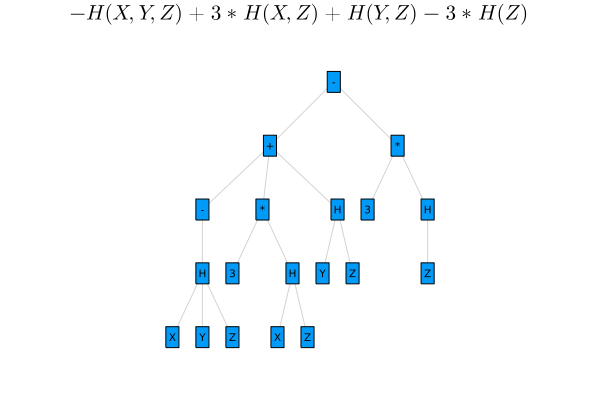

Overview
This package contains routines to perform Information Theoretic measures. The priliminary build up of this tool is to validate, prove and analyze Information Inequalities. This can be used both for rigorous computations and analysis of Information measures and expressions.
An first overview of the package was given at BLA, the slides are available here.
Features
The package is still under active development and things evolve quickly (or at least should)
- enclosure of the solution of interval linear systems
- exact characterization of the entropic space
- verified proof and $\LaTeX$ rendering in display
- enclosure of singularvalues of the entropic space generator matrix
- Further work
Installation
Open a Julia session and enter
using Pkg; Pkg.add("InformationInequalities")this will download the package and all the necessary dependencies for you. Next you can import the package with
using InformationInequalitiesand you are ready to go.
Quickstart
using InformationInequalities
using Plots
E="3I(X;Y|Z)+2H(X|Y,Z)"
A=LinearInformationExpressionToCanonical(E)$-H(X,Y,Z) + 3 H(X,Z) + H(Y,Z) - 3 H(Z)$.
To plot an Information expression as a tree graph in Entropy co-ordinates,
using InformationInequalities
using Plots
E="3I(X;Y|Z)+2H(X|Y,Z)"
A=plotIE(E)
Another example TBD
Citation
If you use this package in your work, please cite it as
@software{nrethnakar2022,
author = {
Nivedita Rethnakar and
Raymond W Yeung
Suhas Diggavi
},
title = {InformationInequalities.jl: Exploring Information Theoretic Inequalities},
month = {1},
year = {2022},
doi = {10.5282/zenodo.5363564},
url = {https://github.com/nivupai/InformationInequalities.jl}
}InformationInequalities
Documentation for InformationInequalities.
InformationInequalities.ConditionalEntropyListInformationInequalities.ConditionalMutualInformationListInformationInequalities.Elemental2CanonicalInformationInequalities.Elemental2Canonical_HInformationInequalities.Elemental2Canonical_MIInformationInequalities.ElementalMeasuresInformationInequalities.GeometryConeGamma2InformationInequalities.LinearInformationExpressionToCanonical1InformationInequalities.elementsGamma2InformationInequalities.entropic_matrixInformationInequalities.entropic_termsInformationInequalities.entropy_vectorInformationInequalities.find_entropic_vectorInformationInequalities.find_matrixGInformationInequalities.find_subsetInformationInequalities.minimalEInformationInequalities.minimal_EIM_list_canonicalInformationInequalities.numEIMInformationInequalities.order_entropicInformationInequalities.order_entropic1InformationInequalities.order_entropic_expressionInformationInequalities.order_stringInformationInequalities.plotEntropyTreeInformationInequalities.plotIEInformationInequalities.plotInformationExpressionInformationInequalities.simplifyInformationInequalities.simplifyHInformationInequalities.unique_entropy_vector
InformationInequalities.ConditionalEntropyList — FunctionList down all conditional Entropy expressions for a given number n of random variables. Conditional Entropies are of the form H(X,Y|Z)
julia> ConditionalEntropyList(2,"🍉")
["H(🍉1)" "H(🍉1|🍉2)" "H(🍉2)" "H(🍉2|🍉1)"]
julia> ConditionalEntropyList(2)
["H(X1)" "H(X1|X2)" "H(X2)" "H(X2|X1)"]
julia> ConditionalEntropyList(3,"dice💠")
["H(dice💠1)"
"H(dice💠1|dice💠2)"
"H(dice💠1|dice💠2,dice💠3)"
"H(dice💠1|dice💠3)"
"H(dice💠2)"
"H(dice💠2|dice💠1)"
"H(dice💠2|dice💠1,dice💠3)"
"H(dice💠2|dice💠3)"
"H(dice💠3)"
"H(dice💠3|dice💠1)"
"H(dice💠3|dice💠1,dice💠2)"
"H(dice💠3|dice💠2)"]
julia> ConditionalEntropy(3,"Z")
["H(Z1)"
"H(Z1|Z2)"
"H(Z1|Z2,Z3)"
"H(Z1|Z3)"
"H(Z2)"
"H(Z2|Z1)"
"H(Z2|Z1,Z3)"
"H(Z2|Z3)"
"H(Z3)"
"H(Z3|Z1)"
"H(Z3|Z1,Z2)"
"H(Z3|Z2)"]InformationInequalities.ConditionalMutualInformationList — FunctionList all conditional Mutual Information expressions for a given number n of random variables. Conditional Entropies are of the form I(X;Y|Z) aka Mutual information between X and Y given Z.
julia> ConditionalMutualInformationList(2,"🍉")
["I(🍉1;🍉2)" "I(🍉2;🍉1)"]
julia> ConditionalMutualInformationList(3)
["I(X1;X2)","I(X1;X2|X3)","I(X1;X3)","I(X1;X3|X2)","I(X2;X1)","I(X2;X1|X3)","I(X2;X3)","I(X2;X3|X1)","I(X3;X1)","I(X3;X1|X2)","I(X3;X2)","I(X3;X2|X1)"]InformationInequalities.Elemental2Canonical — FunctionElemental2Canonical(s::String="I(Xi;X🐬|π)")Convert elemental Information measure to canonical form. If s is unspecified, it performs a default expression.
Examples
julia> Elemental2Canonical("I(Xi;X🐬|π)")
"H(Xi,π)+H(X🐬,π)-H(Xi,X🐬,π)-H(π)"
julia> Elemental2Canonical("H(Xi,X2|π,β)")
"H(Xi,X2,π,β) - H(π,β)"
julia>Elemental2Canonical("I(Xi;X2,ρ,🍎|Zπ,β,🍩)")
"H(Xi,Zπ,β,🍩)+H(X2,ρ,🍎,Zπ,β,🍩)-H(Xi,X2,ρ,🍎,Zπ,β,🍩)-H(Zπ,β,🍩)"InformationInequalities.Elemental2Canonical_H — FunctionElemental2Canonical_H(s::String="I(Xi;X🐬|π)") Convert a Entropy or Conditional entropy expression s to elemental form. If s is unspecified, it performs a default expression.
Examples
julia> Elemental2Canonical_H("H(Xi,X🐬|π,γ)")
"H(Xi,X🐬,π,γ)-H(π,γ)"InformationInequalities.Elemental2Canonical_MI — FunctionMutualInformation_ElemToCanon(s::String="I(Xi;X🐬|π)")Convert a mutual information expression s to elemental form. If s is unspecified, it performs a default expression.
Examples
julia> Elemental2Canonical("I(Xi;X🐬|π)")
"H(Xi,π)+H(X🐬,π)-H(Xi,X🐬,π)-H(π)"InformationInequalities.ElementalMeasures — FunctionList of Elemental Information measures (EIM) for a given n number of random variables. EIM comprise of conditional entropies H(X1...,Xn|Y1...Ym) and conditional mutual information I(X₁...Xₙ;Y₁....Yₘ|Z₁...Zₖ) measures.
julia> ElementalMeasures(2)
["H(X1)","H(X1|X2)","H(X2)","H(X2|X1)","I(X1;X2)","I(X2;X1)"]
julia> ElementalMeasures(3,"🐘")
["H(🐘1)"
"H(🐘1|🐘2)"
"H(🐘1|🐘2,🐘3)"
"H(🐘1|🐘3)"
"H(🐘2)"
"H(🐘2|🐘1)"
"H(🐘2|🐘1,🐘3)"
"H(🐘2|🐘3)"
"H(🐘3)"
"H(🐘3|🐘1)"
"H(🐘3|🐘1,🐘2)"
"H(🐘3|🐘2)"
"I(🐘1;🐘2)"
"I(🐘1;🐘2|🐘3)"
"I(🐘1;🐘3)"
"I(🐘1;🐘3|🐘2)"
"I(🐘2;🐘1)"
"I(🐘2;🐘1|🐘3)"
"I(🐘2;🐘3)"
"I(🐘2;🐘3|🐘1)"
"I(🐘3;🐘1)"
"I(🐘3;🐘1|🐘2)"
"I(🐘3;🐘2)"
"I(🐘3;🐘2|🐘1)"]InformationInequalities.GeometryConeGamma2 — MethodΓ₂ geometry. This is the simplest case with two random variables (say X,Y) forming a geometry in three dimension. The geometric space is spanned by entropy vectors H(X), H(Y) and H(X,Y). Γ₂ is a 3D cone in the positive orthant. This function is used for visualizing the entropic space in 3D.
InformationInequalities.LinearInformationExpressionToCanonical1 — MethodLinearInformationExpressionToCanonical(A)
julia>LinearInformationExpressionToCanonical("I(X;Y|Z)-2.3H(U,V)-2H(u)")
"1H(X,Z)+1H(Y,Z)-1H(X,Y,Z)-1H(Z)-2.3H(U,V)-2H(u)"InformationInequalities.elementsGamma2 — MethodSet of discrete points in Γ₂ confined within a hypercube
InformationInequalities.entropic_matrix — FunctionFind the Entropic matrix Gfor a givenn`
julia> entropic_matrix(3)InformationInequalities.entropic_terms — MethodE,UE,V,λ =entropic_terms(S::AbstractString)Find the additive entropic terms in the canonical expression. This function is internally used in simplifyH(S::AbstractString).
Arguments
- S = Any linear Information Expression. These are linear combination of $I(X_1,...X_k;Y_1,..Y_l|Z_1,...Z_n)$ and $H(X_1,X_2,...X_m|Z_1,..Z_n)$
Output
- E = Constituent Information measures in S
- U = The distinct (unique) elements from E
- V = The individual elements of S
- λ = The scaling coefficients of U (i.e., $V=λ^T E$)
Examples
julia> S="I(X;Y)-H(X,Y|Z)-3H(X,Y)+2I(X;Y)"
julia> E,UE,V,λ=entropic_terms(S)
["I(X;Y)" "H(X,Y|Z)" "H(X,Y)" "I(X;Y)"],
["I(X;Y)" "H(X,Y|Z)" "H(X,Y)"],
["1I(X;Y)" "-1H(X,Y|Z)" "-3H(X,Y)" "2I(X;Y)"],
[1.0 -1.0 -3.0 2.0]InformationInequalities.entropy_vector — FunctionFor a given number n of random variables, list down all the elemental information measures and their corresponding entropic decompositions. The entropic vectors are identified with the prefix h and follows lexicographic mapping. e.g., H(X1,X3,X7)=h137. Note that, for now this lexicographic mapping works only for n < 10.
InformationInequalities.find_entropic_vector — FunctionGiven a linear expression in canonical form, it finds the co-ordinates in the entropic space Γ
InformationInequalities.find_matrixG — FunctionFind the Entropic matrix G for a given n
julia> find_matrixG(3)InformationInequalities.find_subset — Functionfind_subset(n::Int64,p,q,RV::AbstractString="X")Given i and j compute Κ ⊆ 𝒩 \{i,j}; i.e., all non exclusive subsets. i,j can also be empty (i.e. []), in which case the non-empty superset gets listed. An optional prefix can be added (default is X).
Examples
julia>find_subset(4,1,3,"X")
["" "X1" "X1,X2" "X1,X2,X5" "X1,X5" "X2" "X2,X5" "X5"]
julia>find_subset(4,1,3,"")
["" "1" "1,2" "1,2,5" "1,5" "2" "2,5" "5"]
julia> find_subset(5,4,3,"🍒")
["" "🍒3" "🍒3,🍒4" "🍒4"]
julia> find_subset(5,[],[],"🍓")
["🍓1" "🍓1,🍓2" "🍓1,🍓2,🍓3" "🍓1,🍓3" "🍓2" "🍓2,🍓3" "🍓3"]InformationInequalities.minimalE — MethodC=minimalE(V,U,λ)This function is internally used in simplifyH(S::AbstractString).
Arguments
- $E$ = Constituent Information measures in $S$
- $U$ = The distinct (unique) elements from $E$
- $V$ = The individual elements of $S$
- $λ$ = The scaling coefficients of $U$ (i.e., $V=λ^T E$)
Output
- C = Simplified Information Expression as a linear combination of $U$
Examples
julia> S="7H(X,Y|Z1,Z2)+2H(X,Y)-4H(X,Y)+H(Z)-3H(X,Y|Z1,Z2)"
julia> E,U,V,λ=entropic_terms(S)
julia> Z= minimalE(V,U,λ)
"+4.0H(X,Y|Z1,Z2)-2.0H(X,Y)+H(Z)"InformationInequalities.minimal_EIM_list_canonical — FunctionFor a given number n of random variables, list down all the elemental information measures in minimal canonical form.
julia> u,v,m,n=minimal_EIM_list_canonical(2)InformationInequalities.numEIM — FunctionFor a given number n of random variables, list down the maximum number of elemental information measures in minimal canonical form.
julia> u,v,m,n=numEIM(2)InformationInequalities.order_entropic — FunctionEach entropy word in an entropic vector is sorted.
Examples
julia> order_entropic("h24-h32-h132-h2")
"h24 - h23 - h123 - h2"
InformationInequalities.order_entropic1 — FunctionEach entropy word in an entropic vector is sorted.
Examples
julia> order_entropic1("h24-h32-h132-h2")
"h24 - h23 - h123 - h2"
julia> order_entropic1("7h32 - h243 - h13701 - h92252")
"7h23-h234-h01137-h22259"
InformationInequalities.order_entropic_expression — FunctionExpress an entropic expression in the lexicographic order of entropic vectors
julia> order_entropic_expression("h12-h32-123")InformationInequalities.order_string — FunctionEach word in a sentence (string) is sorted alphabetically.
Examples
julia> order_string("This is a sorted sentence; Who is 1 and two ")
" This is a deorst ;ceeennst Who is 1 adn otw "
InformationInequalities.plotEntropyTree — MethodplotEntropyTree(S,...)
julia>plotEntropyTree("H(X,Y)+1.2 H(X)+7H(X1,X2,X3)")
julia>plotEntropyTree("H(X,Y)+1H(X1,X2)+3H(X1,X2,X3)",curves=:false,nodecolor=:gold,edgecolor=:gray,nodeshape=:rect,nodesize=0.15)InformationInequalities.plotIE — MethodplotIE(S,...)
julia>PlotIE("H(X,Y)+7H(X1,X2,X3)")
julia>plotIE("I(X;Y)+2I(X;Y|Z)",curves=:false)InformationInequalities.plotInformationExpression — MethodPlotInformationExpression(S,...)
julia>PlotInformationExpression("H(X,Y)+7H(X1,X2,X3)")
julia>PlotInformationExpression("I(X;Y)+2I(X;Y|Z)",curves=:false)InformationInequalities.simplify — MethodExpress an Information Expression in the simplest form (algebraically).
Examples
julia> simplify("I(X;Y)-H(X,Y|Z)-3H(X,Y)+2I(X;Y)")
"+3.0I(X;Y)-H(X,Y|Z)-3.0H(X,Y)"
julia> simplify("3I(X;Y|Z)-H(X,Y|Z)-3I(X;Y|Z)-3H(X,Y|Z)+H(X1,X2)")
"-4.0H(X,Y|Z)+H(X1,X2)"InformationInequalities.simplifyH — MethodExpress an Information Expression in the simplest form (algebraically). This is used in conjunction with the canonical expression.
Examples
julia> InformationInequalities.unique_entropy_vector — FunctionFor a given number n<10 of random variables, list down all the unique elemental information measures and their corresponding entropic decompositions. The entropic vectors are identified with the prefix h and follows lexicographic mapping. e.g., H(X1,X3,X7)=h137. Note that, for now this lexicographic mapping works only for n < 10.